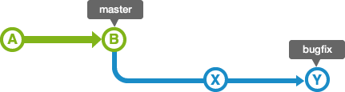
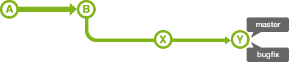
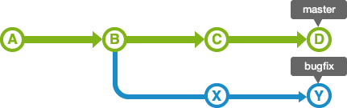
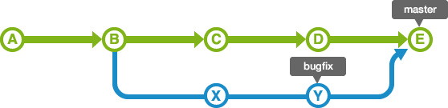
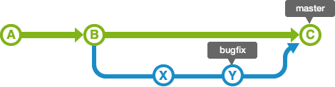
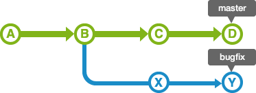
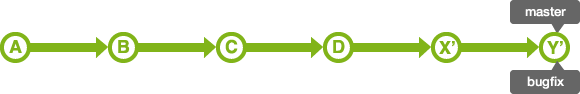
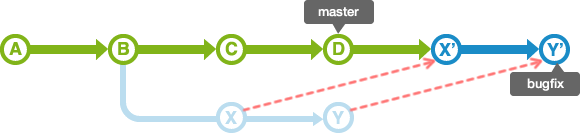
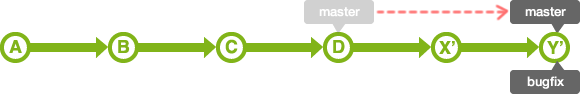

分支
分支的合併
完成作業的Topic分支，最終都會合併到Integration分支。合併分支有2種方法：使用「merge」或「rebase」。根據使用的方法合併後的分支歷史記錄有很大的差別。
Merge
使用 merge，可以合併多個歷史記錄。
如下圖所示 bugfix 分支是從 master 分支分開出來的。

合併 bugfix 分支到 master 分支時， 如果master 分支的狀態是沒有更改過的話，那麼這個合併是非常簡單的。 bugfix 分支的歷史記錄包含了 master 分支的歷史記錄，所以只要把bugfix 移動到 master 分支就可以導入 bugfix 分支的內容。這樣的合併被稱為 fast-forward（快轉）合併。

但是，master 分支的歷史記錄有可能在 bugfix 分支分開後有新的修改。這時候，要把 master 分支的修改內容和 bugfix 分支的修改內容匯合起來。

匯合兩個修改時會產生一個名為「合併提交」的提交。Master的位置會被更新到新建立的合併提交上。

Note
執行合併時，使用 non fast-forward 參數選項，即使是可以 fast-forward 的合併也會建立新的提交並合併喔。

執行 non fast-forward 的合併後，分支會維持原狀，要調查在這個分支裡的操作就容易多了。
Rebase
和 merge 的例子一樣，如下圖所示 bugfix 分支是從 master 分支分開出來的。

使用 rebase 進行分支合併的話會出現下圖所顯示的歷史記錄。現在來簡單的講解一下合併的流程吧。

首先，rebase bugfix 分支到 master 分支。bugfix 分支的歷史記錄會增加在 master 分支的後面。因此，如圖所示歷史記錄會被統一，形成簡單的一條線。
移動提交 X 和 Y 有可能會發生衝突，所以需要修改各自提交時發生衝突的部分。

執行Rebase 時， master 的位置不變，因此，待 master 分支合併 bugfix 分支後，master 的HEAD會移動到 bugfix 的HEAD這裡。

Note
Merge 和 rebase 都是合併歷史記錄，但是結果不同。
-
Merge
修改內容的歷史記錄會維持原狀，但是合併後的歷史紀錄會變得更複雜。 -
Rebase
修改內容的歷史記錄會接在要合併的分支後面，合併後的歷史記錄會比較清楚簡單，但是，會比使用 merge 更容易發生衝突。
您可以根據團隊的需求分別使用merge 和 rebase 。例如，您想要簡化歷史記錄，您可以試試看以下的操作：
- 當您想要從integration分支導入最新變更時，您可以在topic分支上使用 rebase 。
- 當您想要合併topic分支上的變更到integration分支時，您可以先在topic分支上使用
rebase ，接著再將topic分支上的變更合併到integration分支 。